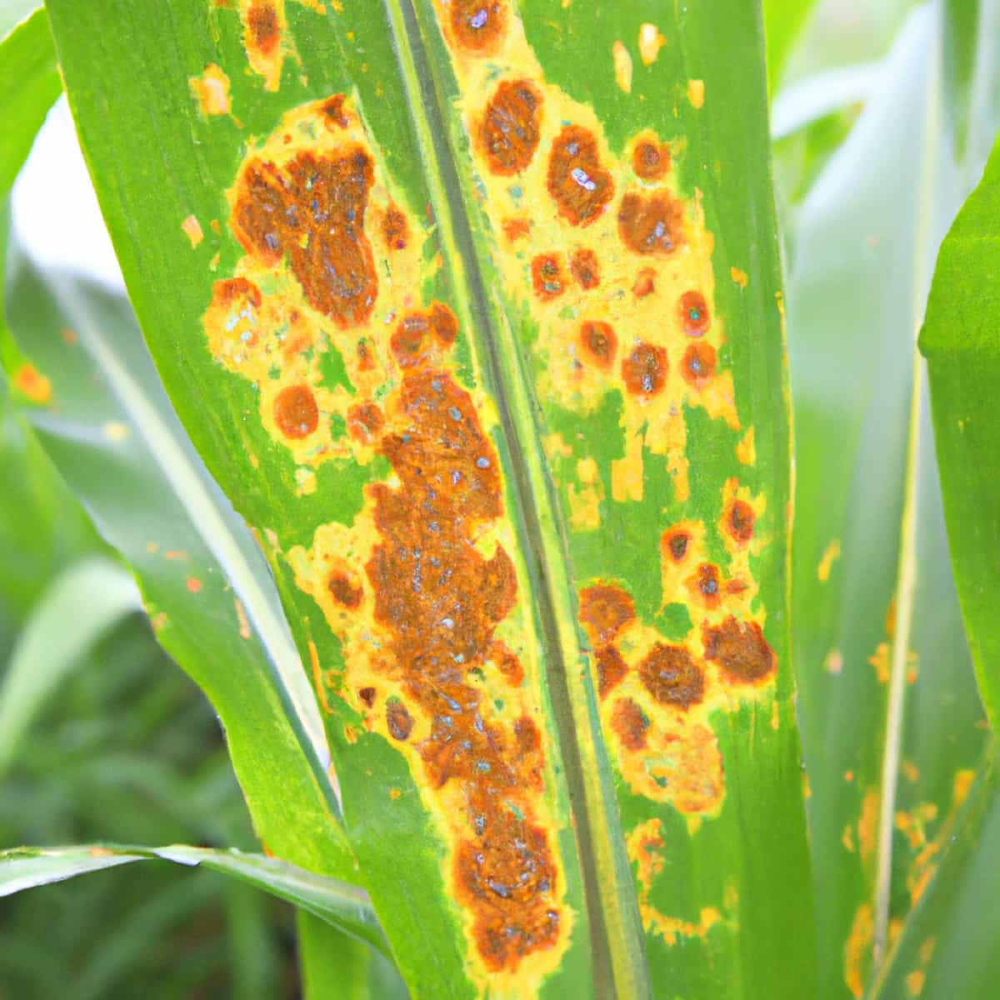
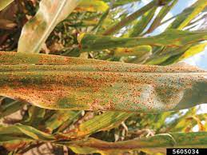

Maize Rust
What it does
Maize Rust is a fungal disease that affects maize plants.
It causes small, round, rust-colored pustules on the leaves, stems, and ears.
Infected plants may experience reduced photosynthesis, stunted growth, and decreased grain yield.
Why and where it occurs
Maize Rust is prevalent in regions where maize is cultivated, especially in areas with warm and humid conditions.
Several species of fungi, including Puccinia sorghi and Puccinia polysora, are responsible for causing this disease.
How to identify
To identify Maize Rust in maize plants, look for the following characteristics:
- Small, round, rust-colored pustules on the upper and lower leaf surfaces, stems, and ears.
- Affected areas may develop reddish-brown or orange spores within the pustules.
|  |  |
 |
| Neck blast | Infected panicles | Node blast |
Why is it important
Maize Rust is significant for several reasons:
- It can cause considerable yield losses, affecting food and feed production.
- Infected plants may exhibit lower quality grains, impacting market value.
- Maize Rust can lead to economic losses for maize growers.
How to manage
Managing Maize Rust can be challenging, but there are strategies to help control its impact:
- Plant disease-resistant maize varieties when available.
- Promote good field sanitation by removing and destroying infected crop residues.
- Promote good field sanitation by removing and destroying infected crop residues.
- Apply appropriate fungicides or biocontrol agents to manage the disease in severe cases.
- Monitor weather conditions and apply fungicides preventively during high-risk periods.